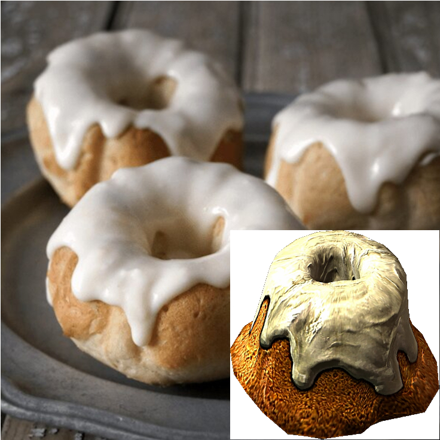

Sweet Roll

The most iconic dessert in all of Skyrim. Time and time again players have
heard the famous line,
"Let me guess...someone stole your Sweetroll?". While this line is said
sarcastically it is not
surprising to think someone would steal this delectable dessert.
Ingredients:
- 2 cups plain flour
- 1 tsp baking powder
- 3/4 cup milk
- 3/4 cup water
- 1/2 cup caster sugar
- 1 cup maple syrup or honey
- 3 eggs (beaten)
- 1 1/2 cup butter (melted)
- 2 vanilla pod (scraped)
- 3 tsp cinnamon powder
- 1 cup icing sugar
Steps:
-
Preheat oven to 200C/392F and grease your bundt tin well with butter.
-
In a mixing bowl, combine and mix all baking ingredients. Pour into a
bundt tin and bake for
45 minutes (or until brown and risen). It should be firm and crusty on
the outside.
Flip onto a wire rack to cool before transferring to a plate.
-
For the glaze, combine the melted butter, sugar, and vanilla in a small
bowl and whip until
well blended. Drizzle over the top of your sweetroll and wait til icing
has hardened before eating.
Go and support Tastes of Tamriel! (Source)
Return to main page